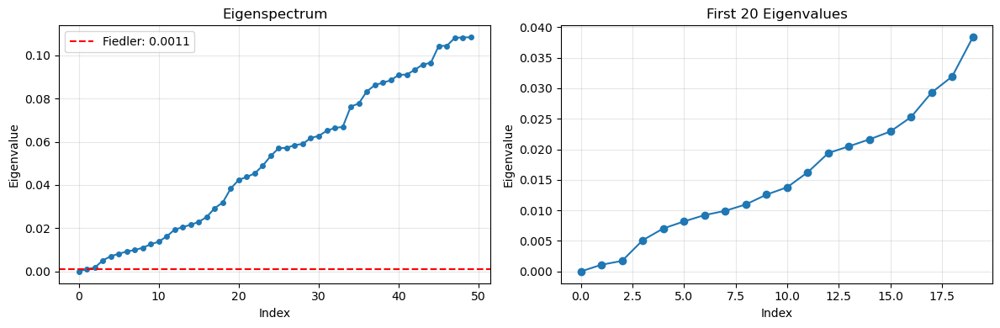
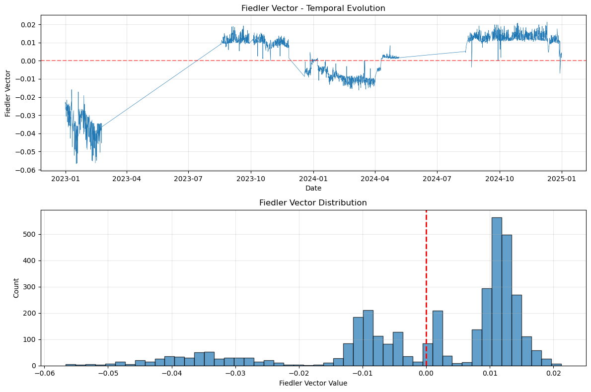
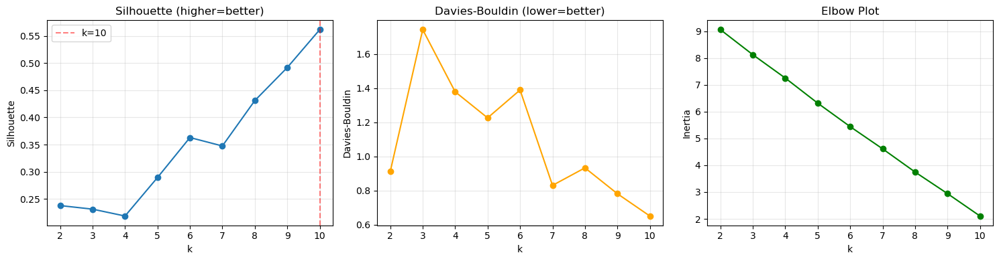
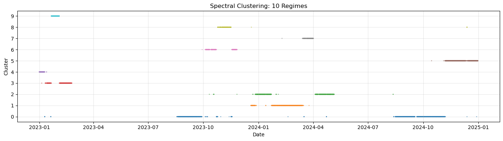
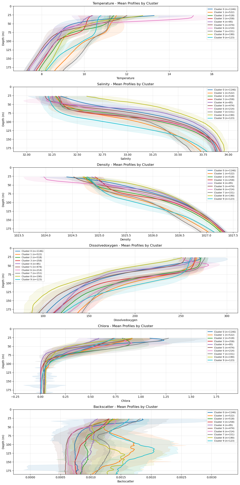

Spectral Graph Analysis SGA#
module 1 load and prep profile data#
top
# %run /home/rob/argosy/sga/sga_depth_analysis.py
# %run /home/rob/argosy/sga/sga_sensor_presence.py
# %run /home/rob/argosy/sga/sga_config.py
%run /home/rob/argosy/sga/sga_module1.py
Module 1: Load and Index
Data source: /home/rob/ooi/sb/postproc/pp06
Years: 2023 - 2024
Active sensors (6): ['temperature', 'salinity', 'density', 'dissolvedoxygen', 'chlora', 'backscatter']
Total unique global indices: 3695
Range: 15595 to 19289
Per-sensor file counts:
temperature: 3695
salinity: 3695
density: 3695
dissolvedoxygen: 3695
chlora: 3693
backscatter: 3690
Building profile index...
Profile index: 3695 profiles
Date range: 2023-01-01 00:00:00 to 2024-12-31 00:00:00
=== Module 1 Complete ===
%run /home/rob/argosy/sga/sga_module2.py
Module 2: Feature Matrix
Profiles: 3695
Sensors (6): ['temperature', 'salinity', 'density', 'dissolvedoxygen', 'chlora', 'backscatter']
Depth grid: 27-185m, 80 bins
Feature matrix: (3695, 480)
Interpolating profiles...
temperature...
3695/3695
salinity...
---------------------------------------------------------------------------
KeyError Traceback (most recent call last)
File ~/miniconda3/envs/argosy/lib/python3.11/site-packages/xarray/backends/file_manager.py:211, in CachingFileManager._acquire_with_cache_info(self, needs_lock)
210 try:
--> 211 file = self._cache[self._key]
212 except KeyError:
File ~/miniconda3/envs/argosy/lib/python3.11/site-packages/xarray/backends/lru_cache.py:56, in LRUCache.__getitem__(self, key)
55 with self._lock:
---> 56 value = self._cache[key]
57 self._cache.move_to_end(key)
KeyError: [<class 'netCDF4._netCDF4.Dataset'>, ('/home/rob/ooi/sb/postproc/pp06/2024/RCA_sb_sp_salinity_2024_345_19113_6_V1.nc',), 'r', (('clobber', True), ('diskless', False), ('format', 'NETCDF4'), ('persist', False)), '533e25fb-db56-40e5-87ae-954db4a4d888']
During handling of the above exception, another exception occurred:
KeyboardInterrupt Traceback (most recent call last)
File ~/argosy/sga/sga_module2.py:99
96 if not filepath.exists():
97 continue
---> 99 interp_data = interpolate_profile(filepath, sensor, STANDARD_DEPTHS)
100 feature_matrix[row_idx, start_col:end_col] = interp_data
101 processed += 1
File ~/argosy/sga/sga_module2.py:49, in interpolate_profile(filepath, sensor_name, standard_depths)
47 """Interpolate a single profile to standard depth grid."""
48 try:
---> 49 ds = xr.open_dataset(filepath)
50 sensor_data = ds[sensor_name].values
51 depth = ds['depth'].values
File ~/miniconda3/envs/argosy/lib/python3.11/site-packages/xarray/backends/api.py:566, in open_dataset(filename_or_obj, engine, chunks, cache, decode_cf, mask_and_scale, decode_times, decode_timedelta, use_cftime, concat_characters, decode_coords, drop_variables, inline_array, chunked_array_type, from_array_kwargs, backend_kwargs, **kwargs)
554 decoders = _resolve_decoders_kwargs(
555 decode_cf,
556 open_backend_dataset_parameters=backend.open_dataset_parameters,
(...)
562 decode_coords=decode_coords,
563 )
565 overwrite_encoded_chunks = kwargs.pop("overwrite_encoded_chunks", None)
--> 566 backend_ds = backend.open_dataset(
567 filename_or_obj,
568 drop_variables=drop_variables,
569 **decoders,
570 **kwargs,
571 )
572 ds = _dataset_from_backend_dataset(
573 backend_ds,
574 filename_or_obj,
(...)
584 **kwargs,
585 )
586 return ds
File ~/miniconda3/envs/argosy/lib/python3.11/site-packages/xarray/backends/netCDF4_.py:590, in NetCDF4BackendEntrypoint.open_dataset(self, filename_or_obj, mask_and_scale, decode_times, concat_characters, decode_coords, drop_variables, use_cftime, decode_timedelta, group, mode, format, clobber, diskless, persist, lock, autoclose)
569 def open_dataset( # type: ignore[override] # allow LSP violation, not supporting **kwargs
570 self,
571 filename_or_obj: str | os.PathLike[Any] | BufferedIOBase | AbstractDataStore,
(...)
587 autoclose=False,
588 ) -> Dataset:
589 filename_or_obj = _normalize_path(filename_or_obj)
--> 590 store = NetCDF4DataStore.open(
591 filename_or_obj,
592 mode=mode,
593 format=format,
594 group=group,
595 clobber=clobber,
596 diskless=diskless,
597 persist=persist,
598 lock=lock,
599 autoclose=autoclose,
600 )
602 store_entrypoint = StoreBackendEntrypoint()
603 with close_on_error(store):
File ~/miniconda3/envs/argosy/lib/python3.11/site-packages/xarray/backends/netCDF4_.py:391, in NetCDF4DataStore.open(cls, filename, mode, format, group, clobber, diskless, persist, lock, lock_maker, autoclose)
385 kwargs = dict(
386 clobber=clobber, diskless=diskless, persist=persist, format=format
387 )
388 manager = CachingFileManager(
389 netCDF4.Dataset, filename, mode=mode, kwargs=kwargs
390 )
--> 391 return cls(manager, group=group, mode=mode, lock=lock, autoclose=autoclose)
File ~/miniconda3/envs/argosy/lib/python3.11/site-packages/xarray/backends/netCDF4_.py:338, in NetCDF4DataStore.__init__(self, manager, group, mode, lock, autoclose)
336 self._group = group
337 self._mode = mode
--> 338 self.format = self.ds.data_model
339 self._filename = self.ds.filepath()
340 self.is_remote = is_remote_uri(self._filename)
File ~/miniconda3/envs/argosy/lib/python3.11/site-packages/xarray/backends/netCDF4_.py:400, in NetCDF4DataStore.ds(self)
398 @property
399 def ds(self):
--> 400 return self._acquire()
File ~/miniconda3/envs/argosy/lib/python3.11/site-packages/xarray/backends/netCDF4_.py:394, in NetCDF4DataStore._acquire(self, needs_lock)
393 def _acquire(self, needs_lock=True):
--> 394 with self._manager.acquire_context(needs_lock) as root:
395 ds = _nc4_require_group(root, self._group, self._mode)
396 return ds
File ~/miniconda3/envs/argosy/lib/python3.11/contextlib.py:137, in _GeneratorContextManager.__enter__(self)
135 del self.args, self.kwds, self.func
136 try:
--> 137 return next(self.gen)
138 except StopIteration:
139 raise RuntimeError("generator didn't yield") from None
File ~/miniconda3/envs/argosy/lib/python3.11/site-packages/xarray/backends/file_manager.py:199, in CachingFileManager.acquire_context(self, needs_lock)
196 @contextlib.contextmanager
197 def acquire_context(self, needs_lock=True):
198 """Context manager for acquiring a file."""
--> 199 file, cached = self._acquire_with_cache_info(needs_lock)
200 try:
201 yield file
File ~/miniconda3/envs/argosy/lib/python3.11/site-packages/xarray/backends/file_manager.py:217, in CachingFileManager._acquire_with_cache_info(self, needs_lock)
215 kwargs = kwargs.copy()
216 kwargs["mode"] = self._mode
--> 217 file = self._opener(*self._args, **kwargs)
218 if self._mode == "w":
219 # ensure file doesn't get overridden when opened again
220 self._mode = "a"
File src/netCDF4/_netCDF4.pyx:2486, in netCDF4._netCDF4.Dataset.__init__()
File src/netCDF4/_netCDF4.pyx:2011, in genexpr()
File src/netCDF4/_netCDF4.pyx:2011, in genexpr()
File ~/miniconda3/envs/argosy/lib/python3.11/site-packages/netCDF4/utils.py:34, in _find_dim(grp, dimname)
30 def _sortbylist(A,B):
31 # sort one list (A) using the values from another list (B)
32 return [A[i] for i in sorted(range(len(A)), key=B.__getitem__)]
---> 34 def _find_dim(grp, dimname):
35 # find Dimension instance given group and name.
36 # look in current group, and parents.
37 group = grp
38 dim = None
KeyboardInterrupt:
%run /home/rob/argosy/sga/sga_module3.py
Module 3: Normalize
Feature matrix: (3695, 480)
Missing data strategy: 1
Removed 14 profiles with >50% missing
Remaining: 3681
Normalized: (3681, 480)
Mean: 0.000000, Std: 1.000000
=== Module 3 Complete ===
Final: 3681 profiles x 480 features
%run /home/rob/argosy/sga/sga_module4.py
Module 4: Similarity Graph
Profiles: 3681
Computing pairwise squared distances...
Distance range: [9.14, 74435.07]
Sigma: 25.56 (sigma^2=653.45, median_sq=653.45)
Similarity range: [0.000000, 0.993028]
Building 10-NN graph...
Edges: 26161
Creating NetworkX graph...
Nodes: 3681, Edges: 26161
Connected: True
=== Module 4 Complete ===
%run /home/rob/argosy/sga/sga_module5.py
Module 5: Spectral Analysis
Graph: 3681 nodes, 26161 edges
Laplacian: Symmetric Normalized, shape (3681, 3681)
Computing 50 smallest eigenvalues...
Eigenvalue range: [-0.000000, 0.108331]
Fiedler value (lambda_2): 0.001102
Spectral gap (lambda_3 - lambda_2): 0.000629
Effective dimensionality (90%): 48


=== Module 5 Complete ===
%run /home/rob/argosy/sga/sga_module6.py
Module 6: Spectral Clustering
Profiles: 3681
Eigenvectors used: 10
k range: 2-10
Evaluating cluster quality...
k=2: Silhouette=0.238, DB=0.911
k=3: Silhouette=0.231, DB=1.743
k=4: Silhouette=0.219, DB=1.379
k=5: Silhouette=0.289, DB=1.226
k=6: Silhouette=0.363, DB=1.389
k=7: Silhouette=0.348, DB=0.830
k=8: Silhouette=0.431, DB=0.932
k=9: Silhouette=0.492, DB=0.781
k=10: Silhouette=0.562, DB=0.650
Final k (best silhouette): 10 (score=0.562)

Running final clustering with k=10...
Cluster statistics:
Cluster 0: 1146 profiles (31.1%), 2023-01-10 to 2024-12-29
Cluster 1: 522 profiles (14.2%), 2023-12-19 to 2024-03-25
Cluster 2: 518 profiles (14.1%), 2023-10-11 to 2024-08-12
Cluster 3: 258 profiles (7.0%), 2023-01-05 to 2023-02-24
Cluster 4: 85 profiles (2.3%), 2023-01-01 to 2023-01-13
Cluster 5: 474 profiles (12.9%), 2024-10-15 to 2024-12-31
Cluster 6: 214 profiles (5.8%), 2023-09-29 to 2023-11-26
Cluster 7: 151 profiles (4.1%), 2024-02-09 to 2024-04-01
Cluster 8: 190 profiles (5.2%), 2023-10-25 to 2024-12-13
Cluster 9: 123 profiles (3.3%), 2023-01-21 to 2023-02-03

=== Module 6 Complete ===
%run /home/rob/argosy/sga/sga_module7.py
Loading clustering results...
Number of clusters: 10
Profiles: 3681
=== Cluster Characterization ===

Cluster profiles plot saved.
=== Temporal Distribution ===
Cluster 0 (1146 profiles):
Date range: 2023-01-10 00:00:00 to 2024-12-29 00:00:00
Year distribution:
2023: 412 profiles
2024: 734 profiles
Cluster 1 (522 profiles):
Date range: 2023-12-19 00:00:00 to 2024-03-25 00:00:00
Year distribution:
2023: 59 profiles
2024: 463 profiles
Cluster 2 (518 profiles):
Date range: 2023-10-11 00:00:00 to 2024-08-12 00:00:00
Year distribution:
2023: 50 profiles
2024: 468 profiles
Cluster 3 (258 profiles):
Date range: 2023-01-05 00:00:00 to 2023-02-24 00:00:00
Year distribution:
2023: 258 profiles
Cluster 4 (85 profiles):
Date range: 2023-01-01 00:00:00 to 2023-01-13 00:00:00
Year distribution:
2023: 85 profiles
Cluster 5 (474 profiles):
Date range: 2024-10-15 00:00:00 to 2024-12-31 00:00:00
Year distribution:
2024: 474 profiles
Cluster 6 (214 profiles):
Date range: 2023-09-29 00:00:00 to 2023-11-26 00:00:00
Year distribution:
2023: 214 profiles
Cluster 7 (151 profiles):
Date range: 2024-02-09 00:00:00 to 2024-04-01 00:00:00
Year distribution:
2024: 151 profiles
Cluster 8 (190 profiles):
Date range: 2023-10-25 00:00:00 to 2024-12-13 00:00:00
Year distribution:
2023: 185 profiles
2024: 5 profiles
Cluster 9 (123 profiles):
Date range: 2023-01-21 00:00:00 to 2023-02-03 00:00:00
Year distribution:
2023: 123 profiles
Saving characterization results...
Saved to /home/rob/ooi/analysis/sga:
- cluster_profiles.png
- cluster_characterization.pkl
=== Module 7 Complete ===